Airlock
habitat · no card draw · hatches n
0°
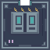
90°
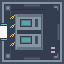
180°
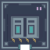
270°
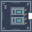
48 unique room IDs · 50 physical tiles · 57 deck variants. Original deterministic pixel art, approved style continued after owner feedback. Rules from unmerged PR #316 at ff3175af; integration remains pending.
All four rotations at 1× and exact 2× TV scale. Hatches compose from each room's legal edges; bases retain transparent door gaps. Symbols use distinct shapes as well as colour. Decks use I / II / III bars.
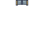
Runtime clips are one-shot, 0.6s opening / 0.8s sealing. Preview repeats forward/back to expose every frame. Reduced-effects welds omit sparks; reduced-motion shows the final state. No screen shake or area flashing.
habitat · no card draw · hatches n




habitat · no card draw · hatches n, e, s, w
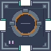
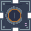
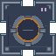
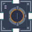
habitat · no card draw · hatches e, s, w
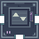
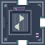
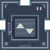
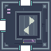
command · no card draw · hatches n, e, s, w
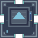
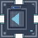
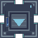
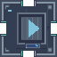
engineering · no card draw · hatches n, e, s, w
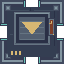
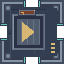
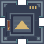
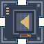
command · anomaly · hatches e, s, w
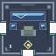
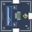
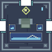
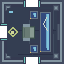
command · salvage · hatches s
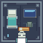
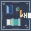
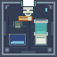
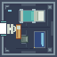
command · incident · hatches n, e, s
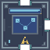
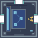
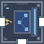
command · anomaly · hatches s, w
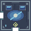
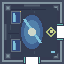
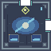
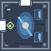
command · incident · hatches s
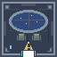
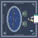
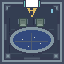
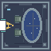
command · no card draw · hatches n, e, s, w
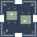
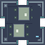
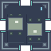
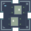
command · salvage · hatches e, s
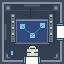
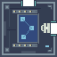
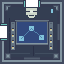
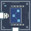
command · salvage · hatches s
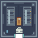
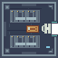
command · incident · hatches e, s, w
command · anomaly · hatches n, s
command · no card draw · hatches n, e, s
habitat · incident · hatches e, s, w
habitat · no card draw · hatches n, e, s, w
habitat · incident · hatches e, s
habitat · no card draw · hatches n, s
habitat · no card draw · hatches s, w
habitat · anomaly · hatches n, e, s
habitat · salvage · hatches s
habitat · incident · hatches e, s, w
habitat · anomaly · hatches s
habitat · anomaly · hatches n, e, s
habitat · salvage · hatches e, w
habitat · incident · hatches n, e, s, w
habitat · anomaly · hatches s
habitat · salvage · hatches e, s
engineering · anomaly · hatches n, e, s, w
engineering · incident · hatches e, s, w
engineering · incident · hatches n, e, s
engineering · salvage · hatches e, s
engineering · salvage · hatches n, e, s, w
engineering · incident · hatches s, w
engineering · anomaly · hatches n, s
engineering · salvage · hatches e, s, w
engineering · no card draw · hatches n, s
engineering · anomaly · hatches s
engineering · incident · hatches s
engineering · anomaly · hatches e, s
command · no card draw · hatches n, s
habitat · no card draw · hatches n, s
engineering · no card draw · hatches n, s
command · no card draw · hatches n, e, s, w
habitat · no card draw · hatches n, e, s, w
engineering · no card draw · hatches n, e, s, w
command · no card draw · hatches n, s
habitat · no card draw · hatches n, s
habitat · salvage · hatches s
engineering · salvage · hatches s
command · incident · hatches e, s, w
engineering · incident · hatches e, s, w
command · anomaly · hatches s
habitat · anomaly · hatches s
engineering · anomaly · hatches s
Concept boards for art review, not a legal tile draw or an implemented TV scene. Pan within each panel on phones.